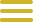

<!DOCTYPE html>
<html lang="fr" x-data="{ menuIsOpen:false }"></html>
<head>
    <meta charset="UTF-8">
    <meta http-equiv="X-UA-Compatible" content="IE=edge">
    <meta name="viewport" content="width=device-width, initial-scale=1.0">
    
    <link rel="preconnect" href="https://fonts.googleapis.com">
    <link rel="preconnect" href="https://fonts.gstatic.com" crossorigin>
    <link href="https://fonts.googleapis.com/css2?family=Italiana&family=Italianno&display=swap" rel="stylesheet">
    
    <script defer src="https://unpkg.com/alpinejs"></script>


    <link rel="stylesheet" href="../src/css/menu.css">
    <link rel="stylesheet" href="../src/css/normalize.css">
    <link rel="stylesheet" href="../src/css/main.css">
    <link rel="stylesheet" href="../src/css/carrousel.css">
    <title>Jules Romain</title>
</head>
<body>
    <header class="main-head">

        <button class="header_menu btndumenu" @click="menuIsOpen = ! menuIsOpen">
            
        </button>
        <nav id="mainNav" x-show="menuIsOpen" x-transition.duration.800ms class="menu">
    
            <button class="icon_cross_menu imgcross" @click="menuIsOpen = ! menuIsOpen">
                
            </button>
            <ul class="liste_li">
                <li><a href="../fr/index.html" style="color: #CEB428" class="textmenu"><h1>Accueil</h1></a></li>
                <hr>
                <li><a href="../fr/billetterie.html" style="color: #CEB428" class="textmenu"><h1 class="textmenu">Billetterie</h1></a></li>
                <hr>                  
                    <section x-data="{open:false}">
                        <li><a style="color: #CEB428" @click="open = !open" class="textmenu"><h1>Artistes</h1></a></li>
                        <hr>                      
                            <h2 x-show="open" x-transition.duration.700ms>                      
                                <a href="billeterie.html" class="text_accordeon">                        
                                    <li><a href="../fr/michel-ange.html" style="color: #CEB428" class="textmenu1"><p class="textmenu1">Michel-Ange</p></a></li>
                                    <li><a href="../fr/leonard-de-vinci.html" style="color: #CEB428" class="textmenu1"><p class="textmenu1">Léonard de Vinci</p></a></li>
                                    <li><a href="../fr/giovanni-bellini.html" style="color: #CEB428" class="textmenu1"><p class="textmenu1">Giovanni Bellini</p></a></li>
                                    <li><a href="../fr/jules-romain.html" style="color: #CEB428" class="textmenu1"><p class="textmenu1">Jules Romain</p></a></li>                  
                                </a>     
                            </h2>
                    </section>
            </ul>
            <ul class="liste_liii">
                <li><a href="../fr/contact.html" style="color: #CEB428"  class="textmenu"><h1>Contact</h1></a></li>
                <hr>
            </ul> 
        </nav>


            <div class="headder-text">
                <a href="../fr/index.html">
            <h1>Renaissance </br>Italienne</h1>
            </div>
                </a>
    </header>

    <h2>Jules Romain </br></br>(1492-1546)</h2>

    <div class="image-portrait">
        
    </div>

    <p>Giulio di Pietro di Filippo de Gianuzzi, dit Giulio Pippi, puis Giulio Romano, connu en France sous le nom francisé 
        de Jules Romain, né à Rome (États pontificaux) vers 1492 ou 1499 et mort à Mantoue (duché de Mantoue) 
        le 1er novembre 1546, est un peintre, architecte et décorateur italien. Il est l'un des premiers artistes maniéristes 
        de la Renaissance et l'élève favori de Raphaël.
    </p>

    <p>Comme apprenti, il entre au service de l'atelier de Raphaël vers 1514. Sous les ordres du pape Léon X, il exécute, 
        d'après les dessins de son maître, la plus grande partie des fresques des loggias du Vatican, dans les stanze, 
        un groupe de figures faisant partie de la fresque dite de L'Incendie de Borgo, et l'essentiel des compositions de 
        la chambre dite de Constantin. Il collabore aussi à la décoration du plafond et de la loggia de la villa Farnesina, 
        propriété alors d'Agostino Chigi, ainsi qu'à celles de la Loggetta et de la Stufetta du cardinal Bibbiena. 
        Il hérite, avec Giovan Francesco Penni, de l'atelier de Raphaël à la mort de celui-ci en 1520, et achève les 
        compositions non terminées du maître, en particulier son Couronnement de la Vierge 
        (dit Madonna di Monteluce, commandé dès 1503) et sa Transfiguration (commencée par Raphaël en 1518). 
        À la demande de Léon X, il termine avec Giovan Francesco Penni la décoration de la chambre de Constantin au Vatican. 
        Il dirige en parallèle avec Giovanni da Udine le chantier du décor de la villa Madame qui est achevé en 1523 et réalise 
        le palais de Filippo Adimari (aujourd'hui palais Adimari Salviati), sa première œuvre personnelle d'architecture. 
        En 1521, il construit la villa Lante sur le Janicule.
    </p>
    
    <div class="accordeon">
        <section>
          <div x-data="{ open: false }">
            <button class="favorite styled" @click="open = ! open">
                <div class="texte-bouton">Ces oeuvres</button>
         
            <span x-show="open" x-transition>
                <a href="../fr/saint-michel.html">
                    <h4>- Saint Michel terrassant le démon</h4>
                </a>
            
                <a href="../fr/triomphe-de-titus.html">
                    <h4>- Le Triomphe de Titus et de Vespasien</h4>
                </a>
            </span>
        </div>
        </section>

    <a href="../fr/frise.html">
        <button class="favorite styled"
        type="button">
        <div class="texte-bouton">
            Frise
        </div>
        </button>
    </a>

    <footer>
        <a href="../fr/contact.html">
            <h2>Nous contacter</h2>
        </a>

        <a href="https://www.fondationcartier.com/">
            <h2>Fondation Cartier, 261 Bd Raspail, 75014 Paris</h2>
        </a>
        <a href="https://twitter.com/?lang=fr"></a>
        <a href="https://www.instagram.com/?hl=fr"></a>
        <a href="https://www.youtube.com/"></a>
        <a href="mailto:fondation-cartier@fondation.cartier.com"></a>
    </footer>
</body>
</html>